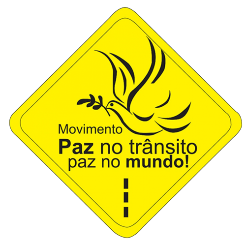

"O Dia Nacional do Trânsito é comemorado em 25 de setembro, mês esse considerado importante nas campanhas de conscientização sobre o trânsito em relação a acidentes, normas de segurança e dirigibilidade pelas ruas do país."
"O Dia Nacional do Trânsito foi instituído para ocorrer em 25 de setembro. Essa data faz referência à regulamentação do Código de Trânsito Brasileiro (CTB), ocorrida em 23 de setembro de 1997 pelo então presidente da República, Fernando Henrique Cardoso, sendo promulgado e aprovado dois dias depois.
"A iniciativa da criação do Dia Nacional do Trânsito se deu para o reforço de campanhas de conscientização e respeito às novas leis regulamentadas pelo CTB. Na década de 1990, algumas leis estavam ultrapassadas com relação à rápida evolução de comportamento da sociedade.
O novo código veio para substituir leis pouco eficazes e, teoricamente, dar mais segurança a todos que utilizam o trânsito (pedestres, veículos, animais). Assim sendo, o Dia Nacional do Trânsito é só mais um reforço à ideia de segurança e eficiência que deve existir nas vias públicas e privadas do país.
